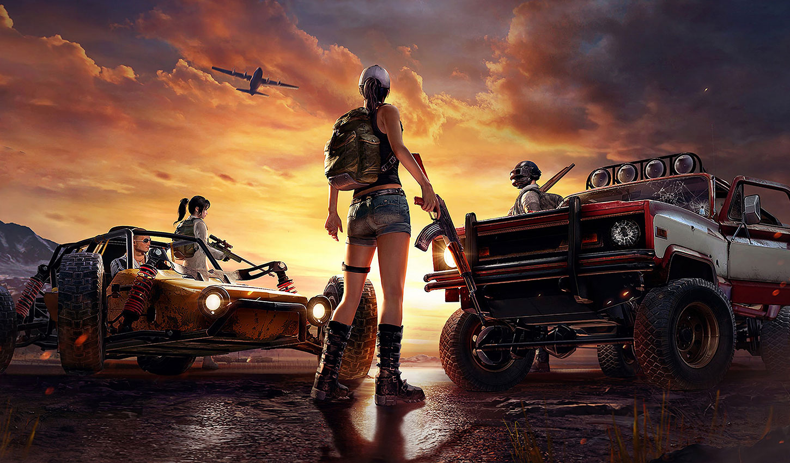

CALL OF DUTY
Call of Duty: Mobile es un titulo adictivo y que ofrece toda la experiencia de la saga de una manera diferente y en cualquier parte. Las partidas son freneticas, los controles virtuales estan bien configurados y el modo Battle Royale es bastante completo. Activision tiene ante si uno de sus titulos mas populares por mucho tiempo, ya que el numero de jugadores no para de aumentar. en cualquier lugar